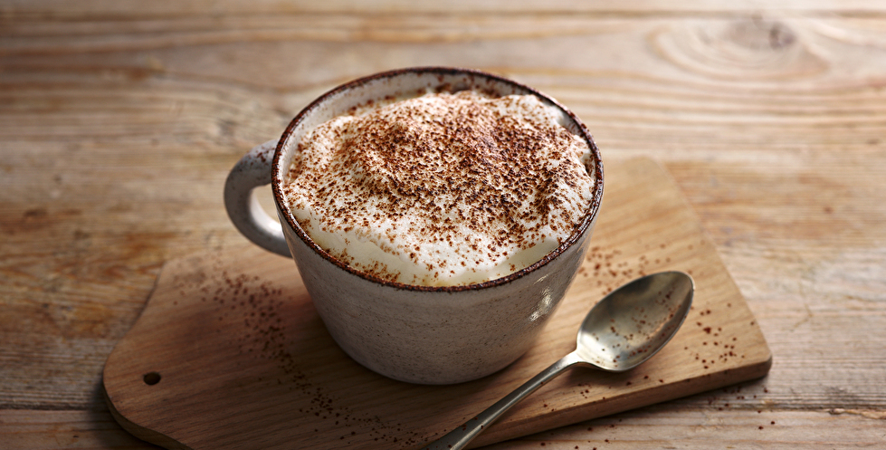

Mocha

Mocha, shortened from caffè mocha, is a drink made with milk, espresso, and chocolate.
It’s essentially a latte with sweetened chocolate.
Ingredients
- 1 to 2 tablespoons granulated sugar
- 1 tablespoon unsweetened cocoa powder
- 1 tablespoon water
- 1 cup hot coffee
- 1/4 cup milk
- 1 tablespoon heavy cream(optional)
- Whipped cream(for topping, optional)
Steps
- In a small pot or microwave-safe cup, stir together sugar, cocoa powder, and water. Heat on the stove (or in your microwave for about 15 seconds), and stir until sugar and cocoa powder dissolve and sauce is completely smooth.
- Stir in coffee and milk and continue to heat until steaming (about 30 seconds in the microwave). If making on the stove, you can whisk the mixture vigorously until foamy. Pour into a cup, top with whipped cream if desired, and enjoy!